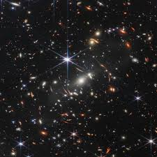
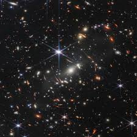

Exploración del Espacio
Descubriendo los secretos del universo
La exploración del espacio ha sido un hito en la historia de la humanidad.
Desde los primeros vuelos espaciales hasta las misiones interplanetarias
más recientes, el ser humano ha buscado comprender el vasto cosmos que
nos rodea. Desde la pequeñez de nuestra Tierra hasta la
inmensidad del universo, cada descubrimiento nos acerca más a
comprender nuestro lugar en el cosmos. La curiosidad
humana nos ha llevado a explorar planetas distantes, estudiar
agujeros negros y buscar signos de vida más allá de nuestro
sistema solar. Estos esfuerzos han sido impulsados
por la necesidad de entender nuestro origen y nuestro futuro
como especie. La exploración espacial no solo ha
ampliado nuestro conocimiento científico, sino que también
ha inspirado generaciones enteras a alcanzar las estrellas.
Explorando las vastas fronteras:
Viajando por el espacio: Observamos la inmensidad del universo a través de
telescopios espaciales como el Hubble o el James Webb, descubriendo galaxias distantes,
nebulosas colosales y estrellas que nacen y mueren en un ciclo interminable.
Explorando el cosmos a través del tiempo: La cosmología nos permite viajar
en el tiempo, desde el Big Bang hasta el futuro lejano del universo, desentrañando
los misterios de la materia oscura, la energía oscura y la expansión acelerada.
Buscando vida extraterrestre:Buscando vida extraterrestre: La astrobiología
explora la posibilidad de vida en otros planetas, analizando exoplanetas, buscando
biofirmas y ampliando nuestra perspectiva sobre la existencia en el universo
Los Planetas del Sistema Solar
Los planetas del Sistema Solar
El sistema solar está formado por ocho planetas que giran alrededor de una estrella central, el Sol. los planetas
en orden de distancia son:
Mercurio, Venus, Tierra, Marte, Júpiter, Saturno, Urano y Neptuno.
Los planetas se pueden dividir en dos grupos:
Planetas terrestres: Mercurio, Venus, Tierra y Marte. Son planetas rocosos con una superficie sólida.
Júpiter, Saturno, Urano y Neptuno. Son planetas gaseosos sin una superficie sólida.
Los planetas del sistema solar son un fascinante y diverso. Cada planeta tiene sus propias características únicas, desde la atmósfera volcánica de Venus hasta los anillos de hielo de Saturno.
La exploración espacial nos ha permitido aprender más sobre estos planetas y su papel en el sistema
solar.
 
Ir al título
Ir a la página 2

Ir al título
Ir a la página 2